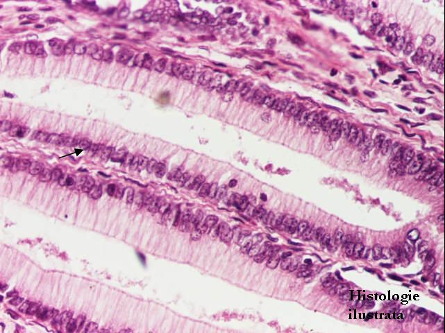
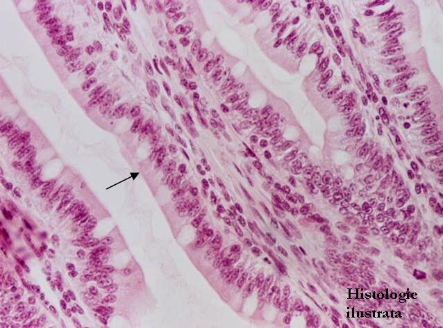
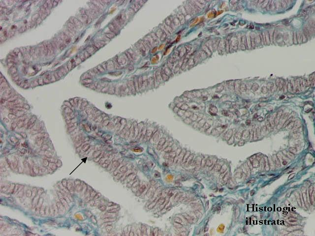
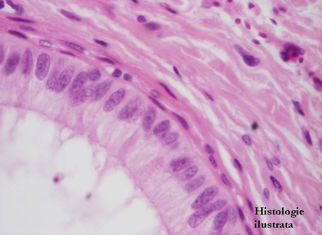

Chap.1 - Tissu épithélial
1.1. Épithéliums de revêtement (tapissants)
Épithéliums simples




Fig. 11 - Épithélium simple prismatique haut – vésicule biliaire,
T.S. X 200
Fig. 12 - Épithélium simple prismatique haut – canal extralobulaire (pancréas), H.E. X 200
Fig. 13 - Épithélium simple prismatique haut – cryptes gastriques,
H.E. X 200
Fig. 14 - Épithélium simple prismatique haut – villosités intestinales, H.E. X 200




Fig. 15 - Épithélium simple prismatique haut – entérocytes et cellules caliciformes (villosités intestinales), H.E. X 400
Fig. 16 - Épithélium simple prismatique haut – cellules caliciformes (villosités intestinales), P.A.S. (+) X 200
Fig. 17 - Épithélium simple prismatique haut – trompe utérine,
T.S. X 200
Fig. 18 - Épithélium simple prismatique – épididyme, H.E. X 400